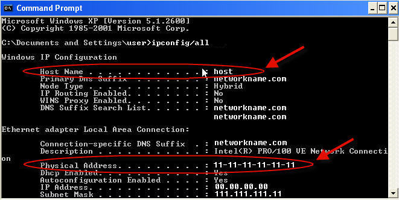
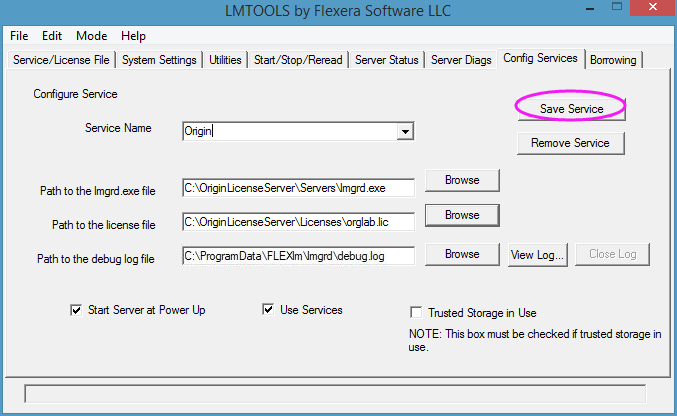
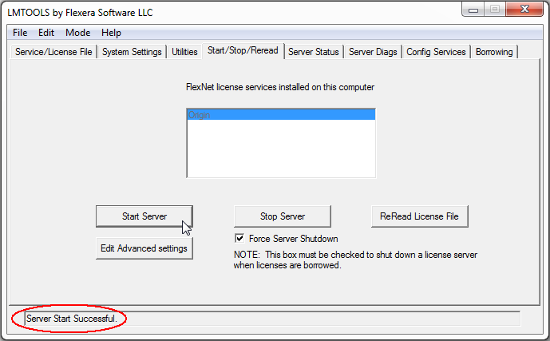
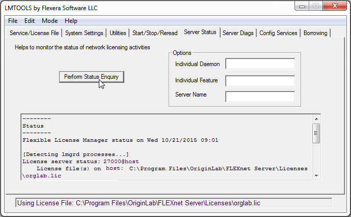

WindowsのFLEXnetサーバ設定方法
Concurrent-Windows
このページは、主にFLEXnet Serverを初めて使用し、初めてセットアップするユーザを対象としています。 こちら動画/Video_Image_2016.png) Setting up your Concurrent Network Packageもご覧ください。
Setting up your Concurrent Network Packageもご覧ください。
FLEXnetサーバー用のコンピュータの選択
動作環境
- 頻繁な再起動を必要としない安定したマシン。サーバーまたはワークステーションのいずれかを推奨。
- OSは、Windows Server 2022, 2019, 2016, 2012, 2008, Windows 11, 10, 8/8.1, 7, Vista (32bit、64bitの両方)に対応しています。
- 低ネットワークトラフィック
- RAM容量が64MB以上
- すべてのOriginコンピュータが接続可能。FLEXnetライセンスサーバとクライアントが TCP/IPプロトコルで通信可能。
FLEXnetサーバーのインストール
/Alert_icon.png) | ライセンスの問題やセキュリティリスクを回避するために、FLEXnetサーバーを常に最新バージョンに更新することをお勧めします。現在のバージョンは、11.19.6.0です。
|
新しいマシンでの設定
FlexNetサーバーを新しいマシンにインストールする場合は、FLEXlmServerSetup.exeをダウンロードしてインストールします。または、Origin DVDをお持ちの場合は、そこからインストールすることもできます。C:\Program Files\ またはデスクトップにはインストールしないでください。
既存のFlexLMライセンスサーバの更新
FLEXnetサーバを最新バージョン（11.19.6.0）にアップグレードするには、インストールされている古いFLEXnetサーバをアンインストールしてから新しいバージョンをインストールすることをお勧めします。Program Filesフォルダとデスクトップにはインストールしないでください。
古いOriginLab FLEXnetサーバの削除方法
- 古いFLEXnetサーバーフォルダに移動し、ライセンスファイルを探します。新しいサーバでに必要になるので、バックアップを作成します。
- LMTOOLS.exeを実行してStart/Stop/Rereadタブを開きます。Force Server Shutdownチェックボックスにチェックを付け、Stop Serverをクリックします。
- サーバがシャットダウンするまでしばらく待ちます。Server Statusでシャットダウンしているかを確認出来ます。
- 次に、Config Servicesタブに移動し、OriginLabライセンスのサービス名を選択して、Remove Serviceをクリックします。LMTOOLS.exeを終了します。
- Windows のコントロールパネルに移動し、OriginLab FLEXlmサーバをアンインストールします。表示されるプログラム名はLicense Server for OriginLabです。アンインストールを実行します。古いOriginLab FLEXnetサーバファイルがアンインストールされます。
- 古いフォルダがまだ存在する場合は、削除します。ライセンスファイルやログファイルなどが含まれている場合があります。
Note:
FLEXnetサーバコンピュータのライセンスファイルをOriginLab.comから取得
FLEXnetサーバのホスト名とホストIDを確認
- FLEXnet Serverをインストールした場合はインストール先に移動します。ToolsフォルダのLMTOOLS.exeを実行します。
- System SettingsタブのComputer/Hostname とEthernet Addressをメモします。
/FLEXnet_Sys_Settings.png)
- または、コマンドプロンプトを開き、次のコマンドを入力します。
ipconfig /all
コマンドプロンプトウィンドウでは、以下のようにホスト名と物理アドレスが表示されます。

ライセンスファイルを取得
- Originlab.comを開いて、ログインしてください。
- ログイン後に表示されるページの登録済みのOrigin製品を表示リンクを選択します。
- お持ちのアカウントに対してすでにシリアル番号の登録がある場合、シリアル番号の一覧表に表示されます。
- 今回のシリアル番号とバージョンに対して今までライセンスファイルを取得したことがなければ、新しいシリアル番号を登録ボタンをクリックしてください。
- 以前にも同じシリアル番号・バージョンに対してライセンスを取得したことがあれば、シリアル番号の横にあるチェックボックスにチェックを付け、表の下にあるFLEXnetライセンスを取得ボタンをクリックしてください。（FLEXnetを別のマシンに移行中で、システム移行のリクエストを送信済みの場合等）
- 『Originを登録し、また、コンピュータに入れるべきライセンスファイルを取得したい』ラジオボタンを選び、「次に進む」ボタンを押します。
- シリアル番号、バージョンなどを入力して登録をクリックします。
- その後、FLEXnetサーバのComputer/Hostname（コマンドプロンプトではホスト名）とホストID（LMTOOLSに表示されるEthernet Address。あるいは、コマンドプロンプトに表示される物理アドレスです。ダッシュ("-")は除いて入力します）。
- 「送信」ボタンをクリックし、ライセンスファイルを生成します。
- 成功すると、ライセンスファイルのテキストがWebページに表示されます。ライセンステキストをコピーして、メモ帳等のテキストエディタに貼り付けます。
- テキストエディタで、ファイル|名前を付けて保存を選択します。ファイルの種類として全てのファイル(*.*)を選択します。このファイルをorglab.licという名前でFLEXnetサーバーの\Licenses\フォルダに保存します。これは推奨の保存場所です。ただし、他の場所に保存することもできます。Licenses\フォルダに移動して、ファイルがorglab.licではなくorglab.licであることを確認します。
FLEXnetサービスの設定と起動
- FLEXnetサーバの\Tools\フォルダからLMTOOLS.exeを実行します。Windows Server 2012, 2008, Windows Vista, Windows7 Windows8では、「LMTools.exe」で右クリックして、「管理者として実行」を選択して開きます。
- Service/License Fileタブで、Configuration Using Servicesを選択します。
- Config Servicesタブの Service Name テキストボックスに、OriginLabまたは任意の名前を入力します。
- Path to the lmgrd.exe fileの欄で、Browseボタンをクリックし、FLEXnet Server\Servers\フォルダに移動して、lmgrd.exeファイルを選択します。
- Path to the license fileの欄で、Browseボタンをクリックし、FLEXnet Server\Licenses\フォルダに移動して、orglab.licファイルを選択し、開くボタンをクリックします 。
- デバッグログファイルはまだありません。このテキストボックスに入れたテキストに基づいてサービスが作成します。\ProgramData\FLEXlm\lmgrd\ より下のパスは、テキストボックスに既に入力されています。権限の問題を回避するために、このパスを受け入れることをお勧めします。
- Use Servicesチェックボックスにチェックを付けます。
- サーバコンピュータが起動したときに、自動的にFLEXlmライセンスサービスを実行させたい場合は、Start Server at Power Upにチェックをつけます。
- Save Serviceをクリックします。

- 「Start/Stop/Reread」タブでForce Server Shutdownチェックボックスを選択します。
- Start Serverボタンをクリックします。LMTOOLSステータスバーに「Server Start Successful」というメッセージが表示されます。

- Server Statusタブで、Perform Status Enquiryボタンをクリックします。Statusウィンドウには、関連する機能の使用状況に関する情報が表示されます。

/Tip_icon.png) | ご利用のネットワーク環境に応じて、FLEXnetライセンスサーバーがOriginソフトウェアと通信できるよう、ファイアウォールでポートを開けることができます。詳細は、こちらのページを参照してください。
ファイアウォールでポートを開く必要がある場合は、ライセンスファイルにポート番号を追加します。詳細は手順はこちらを参照してください。
|
関連情報：
- Originクライアントをライセンスサーバに接続する| FLEXnetクライアントのセットアップ
- 特定のユーザや部署用に、FLEXnetサービスにアクセス制限したり、ライセンスを保管したい場合は、オプションファイルを作成できます。
- Linux用FLEXnet サーバーの設定